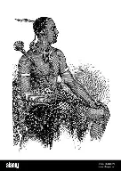

Welcome to the vibrant world of Basotho cultural heritage! the Basotho people residing primarily in Lesoyho and South Africa have a rich and diverse cultural legacy shaped by their history,traditional attire and values.Explore our website to learn about the customs,music and dances, and crafts and arts of Basotho,from their iconic blankets and traditional attire to their their rhymic sounds of traditional music and dances,the immerse yourself in wormth and hospitality of Basotho.Our goal is to provide a platform where people can learn about, aprreciate and engage with the traditions of Basotho nation.
 Click to view other pages